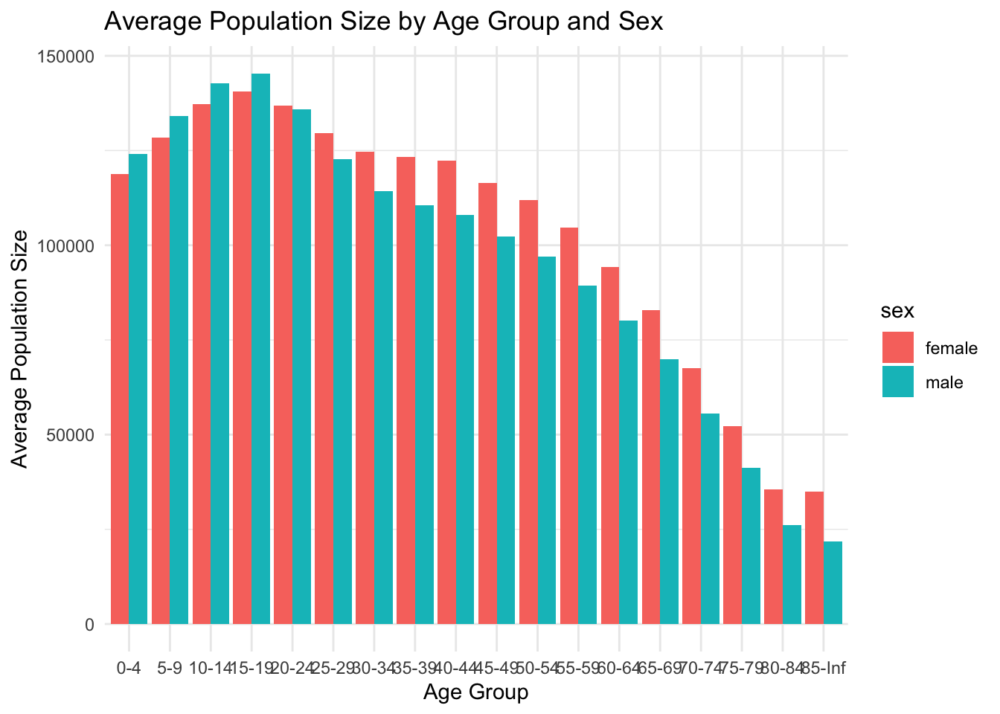
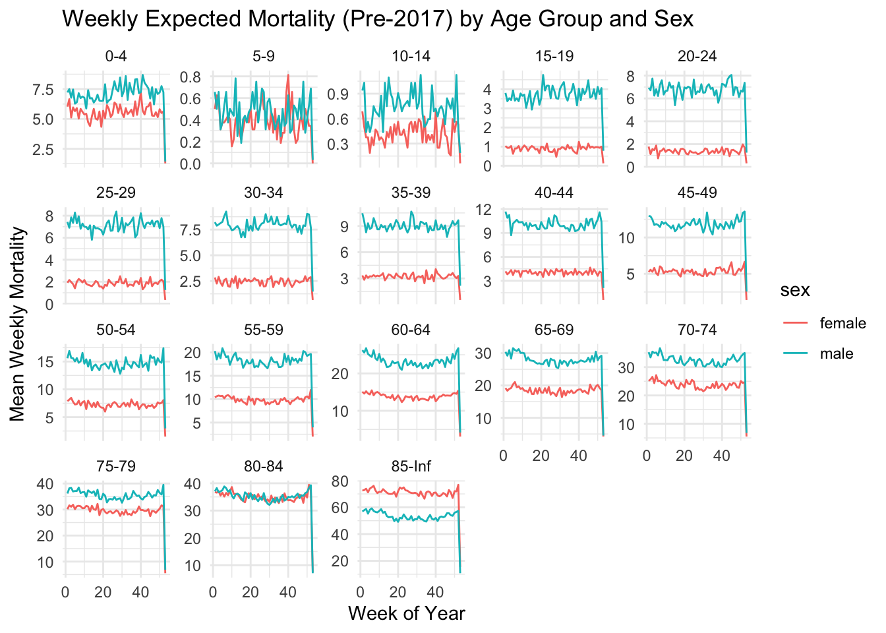
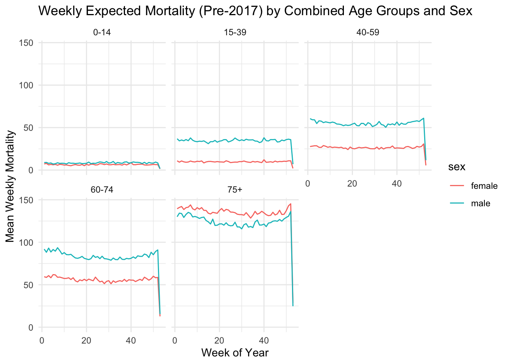

Excess mortality in Puerto Rico after Hurricane María.
Published
December 16, 2024
1 Abstract (150-200 words)
Purpose: The abstract provides a concise summary of your project, including its objectives, key findings, and significance. Write this section last, after completing all other sections, to accurately reflect your project’s focus and main results. Guidelines: Limit this section to 150-200 words. Briefly outline the purpose of your study, the approach you used, and the primary results and conclusions. The abstract should be clear, succinct, and give readers an immediate understanding of what your project entails.
2 Introduction (500-600 words)
Purpose: The introduction sets the stage for your project, presenting the background and rationale for your analysis. Explain why the topic is significant. Guidelines: Start with a broad overview of the topic, gradually narrowing down to your specific focus. Conclude with a clear statement of your research questions, hypotheses, or objectives. Use 2-3 paragraphs to establish a solid foundation for the rest of the paper.
3 Methods (600-700 words)
Purpose: This section details the data sources, methods, and analytical techniques you used to conduct your analysis. It should be specific enough that someone else could replicate your study using the same resources and approach. Guidelines: Describe the dataset(s) you used, including information about data collection (e.g., sources, time frame). Outline your approach for cleaning and analyzing the data, including any statistical or computational methods applied. Clearly explain any assumptions or limitations in your approach.
4 Results (500-600 words)
Purpose: The results section presents the main findings of your analysis without interpretation. Organize the data logically to highlight key insights, using tables, figures, and charts to illustrate trends and comparisons. Guidelines: For each result, briefly describe it and refer to relevant visuals or tables where appropriate. Do not provide explanations or discuss implications in this section; focus only on presenting the findings clearly and accurately.
`summarise()` has grouped output by 'agegroup'. You can override using the
`.groups` argument.
print(population_summary)
# A tibble: 36 × 3
# Groups: agegroup [18]
agegroup sex mean_population
<fct> <chr> <dbl>
1 0-4 female 118887.
2 0-4 male 124167.
3 5-9 female 128338.
4 5-9 male 134028.
5 10-14 female 137254.
6 10-14 male 142835.
7 15-19 female 140546.
8 15-19 male 145330.
9 20-24 female 136901.
10 20-24 male 135803.
# ℹ 26 more rows
ggplot(population_summary, aes(x = agegroup, y = mean_population, fill = sex)) +geom_bar(stat ="identity", position ="dodge") +labs(title ="Average Population Size by Age Group and Sex",x ="Age Group", y ="Average Population Size") +theme_minimal()

In the younger age group, under 14 years, male has higher proportion than female. This might be because of the notion that some of the family willingly prefer having boy baby than girl. Besides, the sex ratio at born is around 105-107 boys versus 100 girls globally.
In the working age group, 20-49, female has higher proportion than male. This might be because male moving out for work or moving out for immigration. During the elder group, the proportion of female is still higher than that of male. This might be because the average age of female is higher than that of male.
Task 2
pre_2017_data <- puerto_rico_counts |>filter(date <as.Date("2017-01-01")) |>mutate(year =year(date),week_of_year =epiweek(date) )# Aggregate by year, week_of_year, agegroup, and sex, and ensure full weeks (7 distinct days)weekly_data <- pre_2017_data |>group_by(year, week_of_year, agegroup, sex) |>summarise(weekly_outcome =sum(outcome, na.rm =TRUE),ndays =n_distinct(date), # Count distinct days in this week-group.groups ='drop' ) |>filter(ndays ==7) # Keep only full weeks# Compute baseline statistics across all pre-2017 yearsbaseline_stats <- weekly_data |>group_by(agegroup, sex, week_of_year) |>summarise(mean_outcome =mean(weekly_outcome, na.rm =TRUE),sd_outcome =sd(weekly_outcome, na.rm =TRUE),.groups ='drop' )# Plot: Facet by age group, color by sex on the same plotggplot(baseline_stats, aes(x = week_of_year, y = mean_outcome, color = sex)) +geom_line() +facet_wrap(~ agegroup, scales ="free_y") +labs(title ="Weekly Expected Mortality (Pre-2017) by Age Group and Sex",x ="Week of Year",y ="Mean Weekly Mortality",color ="Sex" ) +theme_minimal()

Methods We used historical mortality data from Puerto Rico collected before 2017 to estimate weekly expected mortality and standard deviation by age group and sex. The dataset included daily mortality counts, which we filtered for pre-2017 dates. Using the R package, we added variables for the year and ISO week to ensure standard week alignment. We calculated weekly mortality by aggregating daily counts per age group, sex, and week. Baseline statistics, including mean and standard deviation, were computed for each group. For streamlined analysis, age groups were combined based on mortality rate similarities into categories: 0-14, 15-39, 40-59, 60-74, and 75+. Visualization of these patterns was achieved using ggplot2, showing trends in mean weekly mortality by age and sex.
Results The analysis shows clear mortality patterns by age and sex. Males generally exhibited higher mortality rates than females across most age groups. Mortality rates increased with age, particularly in the 75+ category. Over the weeks, mortality rates remained relatively stable, with minor fluctuations in younger groups. Combining age groups allowed us to maintain trend visibility while simplifying analysis. The visualizations highlighted these trends effectively, showing greater variability in older age groups. These patterns reflect demographic expectations, confirming the consistency and reliability of the estimated mortality statistics.
Discussion The results validate expected mortality patterns, with notable higher rates in males and older demographics. The weekly stability suggests minimal impact from short-term external factors during the analyzed period. Age group combinations were effective in reducing complexity without losing critical insights. This approach is beneficial for similar studies to simplify demographic analysis.
Task 3
# Filter for pre-2017 and 2017 data, assign year and week_of_yearpre_and_during_2017 <- puerto_rico_counts |>filter(date <as.Date("2018-01-01")) |># Include all data before 2018mutate(year =year(date),week_of_year =epiweek(date) ) |>group_by(year, week_of_year) |>summarise(total_outcome =sum(outcome, na.rm =TRUE), # Sum weekly outcomesndays =n_distinct(date), # Ensure full weeks (7 days).groups ="drop" ) |>filter(ndays ==7) |># Keep only full weeksmutate(week_start =as.Date(paste(year, week_of_year, 1, sep ="-"), "%Y-%U-%u") # Start of each epiweek )# Visualization: Weekly total mortality over time# Add a new date column to represent the start of each weekpre_and_during_2017 <- pre_and_during_2017 |>mutate(week_start =as.Date(paste(year, week_of_year, 1, sep ="-"), "%Y-%U-%u"))# Visualization: Weekly total mortality over timeggplot(pre_and_during_2017, aes(x = week_start, y = total_outcome)) +geom_line() +labs(title ="Weekly Total Mortality (Pre-2017 and 2017)",x ="Week Start Date",y ="Total Weekly Mortality" ) +theme_minimal() +theme(axis.text.x =element_text(angle =45, hjust =1), # Rotate x-axis labels for readabilitypanel.grid.minor =element_blank() )

# Identify weeks with mortality >= 700 for year > 1987 and < 2017weeks_high_mortality_post_1987 <- pre_and_during_2017 |>filter(year >1987& year <=2017, total_outcome >=700) |>select(year, week_of_year, total_outcome, week_start)# Identify weeks with mortality > 550 for year <= 1987weeks_high_mortality_pre_1987 <- pre_and_during_2017 |>filter(year <=1987, total_outcome >550) |>select(year, week_of_year, total_outcome, week_start)# Combine high mortality weekshigh_mortality_weeks <-bind_rows( weeks_high_mortality_post_1987 |>select(year, week_of_year), weeks_high_mortality_pre_1987 |>select(year, week_of_year))high_mortality_weeks
#### Remove high mortality weeks from baseline computation# Filter pre-2017 data and define epiweek and yearpre_2017_data <- puerto_rico_counts |>filter(date <as.Date("2017-01-01")) |>mutate(year =year(date),week_of_year =epiweek(date) )# Aggregate by year, week_of_year, agegroup, and sex, and ensure full weeks (7 distinct days)weekly_data <- pre_2017_data |>group_by(year, week_of_year, agegroup, sex) |>summarise(weekly_outcome =sum(outcome, na.rm =TRUE),ndays =n_distinct(date), # Count distinct days in this week-group.groups ='drop' ) |>filter(ndays ==7) # Keep only full weeks# Remove weeks with high mortalityfiltered_weekly_data <- weekly_data |>anti_join(high_mortality_weeks, by =c("year", "week_of_year"))# Compute baseline statistics across all pre-2017 years, excluding high mortality weeksbaseline_stats <- filtered_weekly_data |>group_by(agegroup, sex, week_of_year) |>summarise(mean_outcome =mean(weekly_outcome, na.rm =TRUE),sd_outcome =sd(weekly_outcome, na.rm =TRUE),.groups ='drop' )print("Baseline Weekly Statistics (Pre-2017, Excluding High Mortality Weeks):")
[1] "Baseline Weekly Statistics (Pre-2017, Excluding High Mortality Weeks):"
Purpose: In the discussion, interpret the significance of your findings, explore potential implications, and relate the results back to your initial research questions or hypotheses. This section allows you to discuss any patterns, unexpected findings, or limitations and suggest possible future research. Guidelines: Analyze your results in the context of your research question, linking them back to the background information from the introduction. Consider what your findings reveal, any limitations they may have, and how they might impact future work or policy. End with a brief conclusion summarizing your main insights.